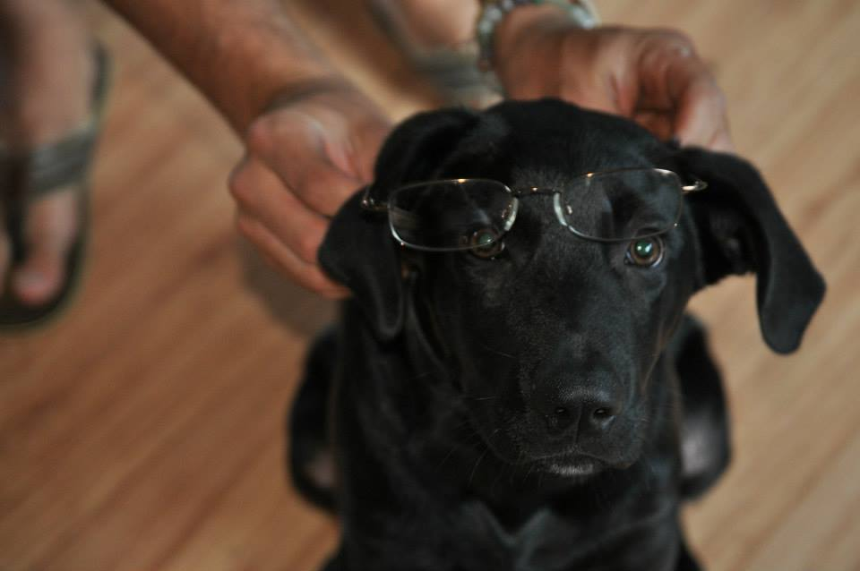

Devin Richard Delfino

Menu
About Me
I am a senior Computer Science and Mathematics double major at Wheaton College in Norton, MA. I am currently applying for software development jobs in the eastern Massachusetts area. My hobbies include reading, nature, puzzles, movies, tennis, soccer, and working with children.
- Birthday: March 16, 1993
- Sign: Pisces
- Hometown: Bourne, MA
- Dorm Room: Beard 236
- Fall 2014 Course Schedule:
- PHYS 228: Scientific Computing
- MATH 331: Geometry
- MATH 321: Abstract Algebra
- COMP 398: Web Application Development